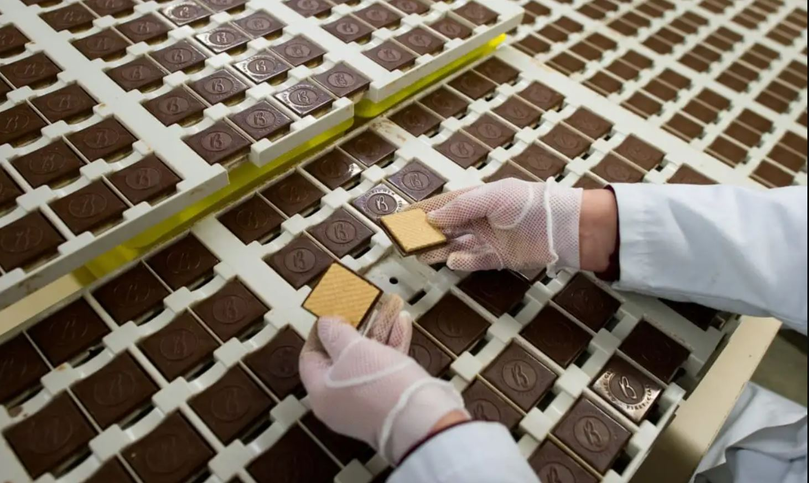
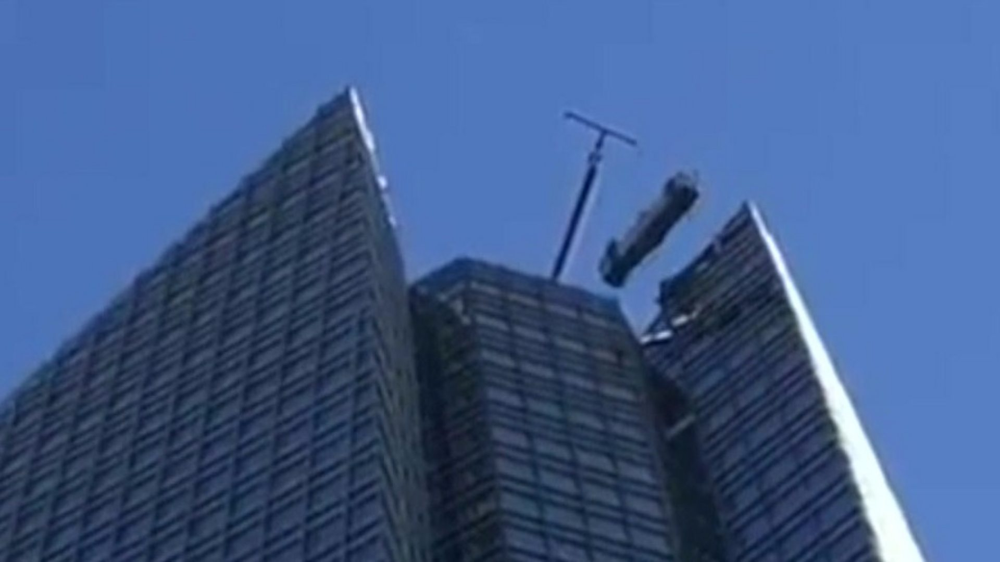
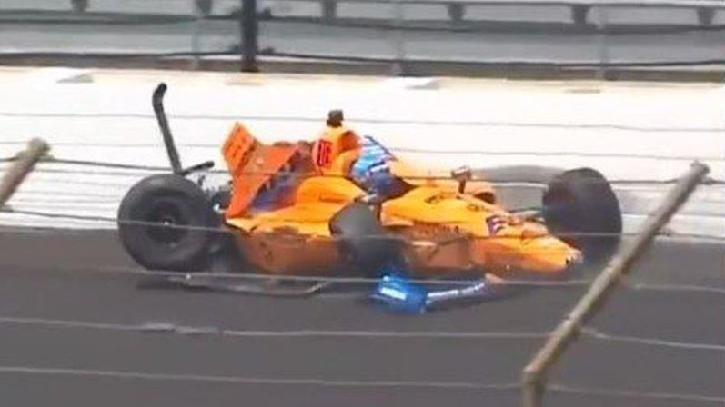
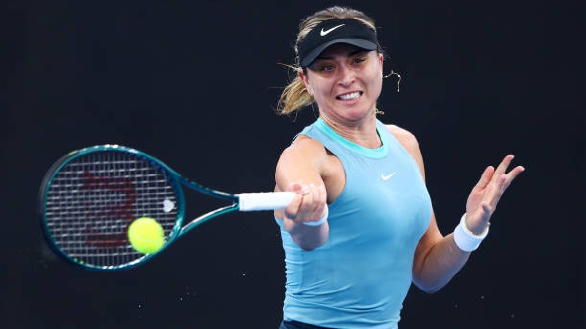
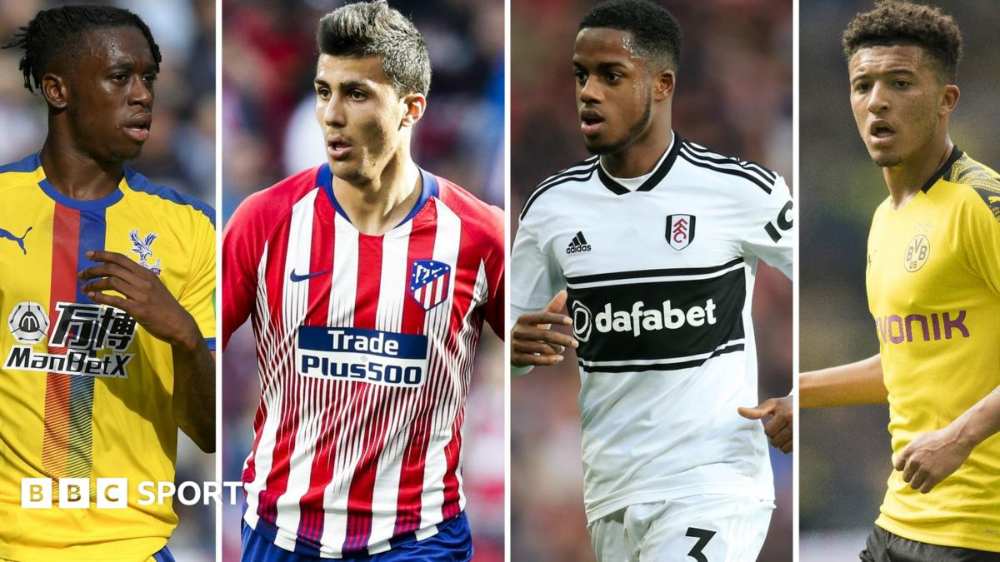

Thursday, 16 May

Verena Bahlsen faced a backlash after defending her firm's use of forced labour during Nazi rule.
The scheme aims to tackle terror content after the Christchurch attacks, but the US opts out.

The workers in Oklahoma City were trapped about 50- storeys up as the lift began to swing out of control.

Two-time Formula 1 world champion Fernando Alonso escapes unhurt after crashing into a wall during practice for the Indianapolis 500.

Two-time French Open winner Maria Sharapova will miss this year's event because of a shoulder injury.

BBC Sport's David Ornstein looks at the top summer transfer targets for the Premier League's top six clubs.